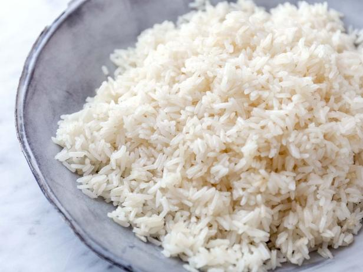

Easy Garlic Rice

A classic, goes well with everything.
Ingredients
- 2 cups of rice
- 2 Garlic cloves
- Water
- Salt
- Oil
Steps
- Slice the garlic;
- Heat the oil in a pan;
- Fry garlic in low heat;
- Add rice as soon as garlic starts to get golden;
- Add salt;
- Add water, until it covers the rice;
- Let it cook until the water has evaporated;
- Serve;